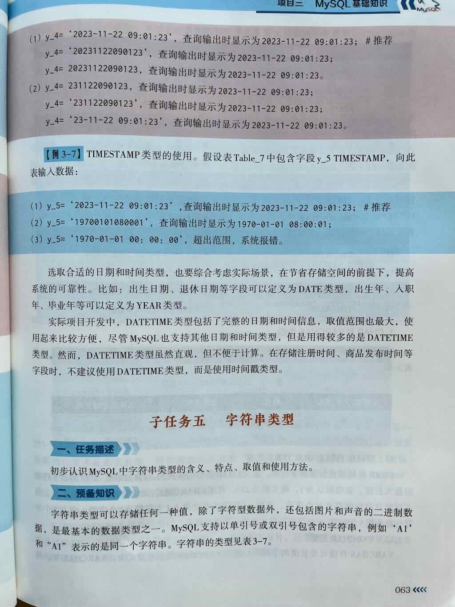
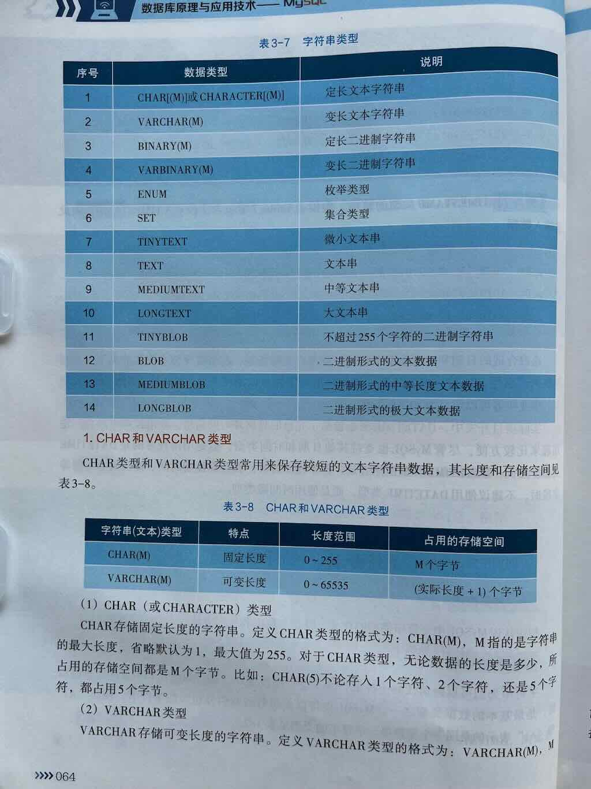
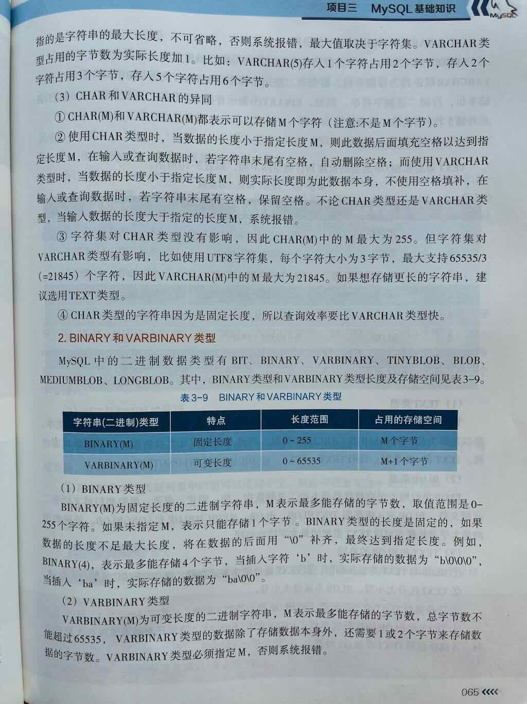
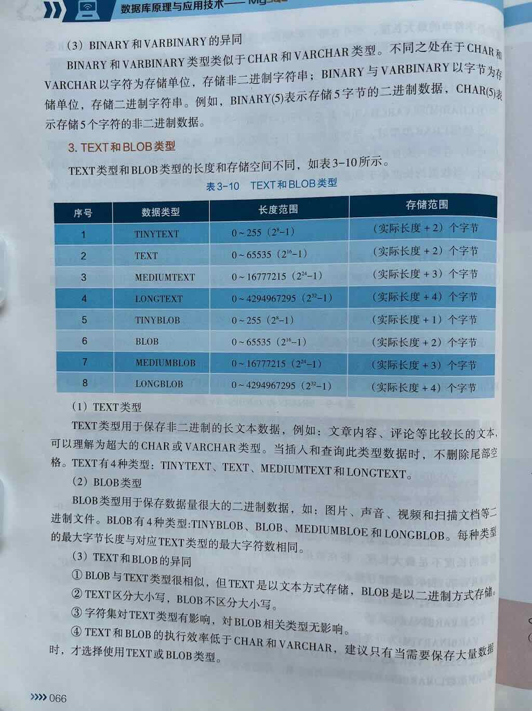
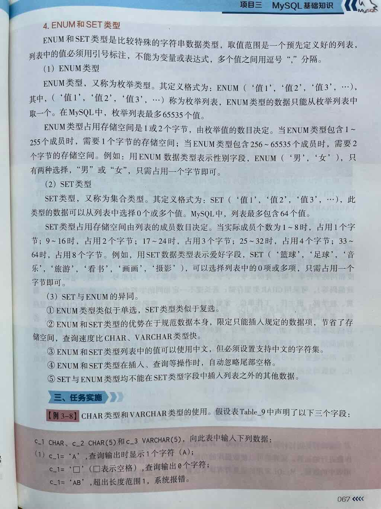

字符串类型
在 MySQL 中，字符串类型（String Types） 用于存储文本数据（字符序列）的数据类型。无论是存储用户名、地址、描述、JSON 文本、HTML 内容，还是日志信息，都离不开字符串类型。
MySQL 提供了多种字符串类型，适用于不同的场景。





一、MySQL 常见字符串类型总览¶
| 数据类型 | 最大长度 | 是否定长 | 说明与用途 |
|---|---|---|---|
| CHAR(M) | 0 ~ 255 字符 | ✅ 定长 | 存储固定长度的字符串，不足部分用空格填充，适合存储长度固定的值（如国家代码、性别代码等） |
| VARCHAR(M) | 0 ~ 65,535 字节（实际受行大小和字符集影响） | ❌ 变长 | 存储可变长度的字符串，适合大多数文本字段，如用户名、标题、描述等 |
| TINYTEXT | 2^8 - 1 = 255 字节 | ❌ 变长 | 非常小的文本，比如状态说明 |
| TEXT | 2^16 - 1 = 65,535 字节 (~64KB) | ❌ 变长 | 一般的长文本，如文章内容、说明、评论 |
| MEDIUMTEXT | 2^24 - 1 = 16,777,215 字节 (~16MB) | ❌ 变长 | 中等长度的大文本，如长文章、日志内容 |
| LONGTEXT | 2^32 - 1 = 4,294,967,295 字节 (~4GB) | ❌ 变长 | 超大文本，如整本书、XML/JSON 内容 |
| ENUM('值1','值2',...) | 最多 65,535 个不同的值 | ✅ 枚举类型 | 只能从预定义的一组值中选择一个，如性别、状态、类型等 |
| SET('值1','值2',...) | 最多 64 个成员 | ✅ 多选集合 | 可存储一组预定义值中的一个或多个，如用户的兴趣标签 |
🎯 注意：
CHAR和VARCHAR是字符类型，存储的是文本字符；TINYTEXT、TEXT、MEDIUMTEXT、LONGTEXT是长文本类型，适合存储大段文字；ENUM和SET是特殊的字符串类型，用于表示一组固定选项中的值（单选/多选）；- 还有
BINARY、VARBINARY、BLOB等二进制字符串类型，用于存储二进制数据（如图片、文件），本文主要聚焦于普通文本字符串类型。
CHAR（定长字符串）¶
语法：
- M 表示字符个数（不是字节数），范围是 0 ~ 255
- 如果存入的字符数小于 M，则自动用空格填充到 M 个字符，取出时会自动去掉尾部空格
- 适合存储长度固定的数据，比如：
- 性别（'M' / 'F'）
- 国家/地区代码（如 'CN', 'US'）
- 状态码（如 'Y', 'N'）
示例：
CREATE TABLE users (
id INT PRIMARY KEY,
gender CHAR(1), -- 存 'M' 或 'F'
country_code CHAR(2) -- 如 'CN', 'US'
);
VARCHAR（变长字符串）¶
语法：
- M 表示最大字符数，范围是 0 ~ 65,535 字节（实际受行大小和字符集影响，通常建议不超过几千字符）
- 变长存储，只占用实际需要的空间 + 1~2个字节记录长度
- 适合存储长度不固定的文本，比如：
- 用户名
- 商品名称
- 标题、摘要、描述等
示例
CREATE TABLE products (
id INT PRIMARY KEY,
name VARCHAR(100), -- 商品名称
description VARCHAR(500) -- 商品描述
);
⚠️ 注意：
VARCHAR(M)中的 M 是字符数，不是字节数，但实际存储时会受字符集影响（如 utf8mb4 下一个中文占 4 字节）
用途：VARCHAR()用于表示长度变化的字符串。
语法
参数：n表示一个整数，用于规定字符串的最大长度。
示例
应用场景：适合存储长度变化的字符串，比如: 用户名、电子邮箱地址等
- 短字符串
| 类型 | 最大长度 | 存储方式 | 特点 | 应用场景 |
|---|---|---|---|---|
CHAR(N) |
255字符 | 固定长度 | 尾部空格自动去除 | 固定长度数据（如MD5） |
VARCHAR(N) |
65535字节 | 变长 + 长度前缀 | 节省空间，但更新可能碎片化 | 用户名、地址等变长数据 |
性能对比：
CHAR(10)vsVARCHAR(10)存储"abc"：- CHAR占用10字节（补空格）
- VARCHAR占用3字节 + 1字节长度前缀
TINYTEXT¶
语法
- 最大 255 字节
- 适合存储非常短的文本内容，如状态说明、简短备注等
- 比 VARCHAR 更节省空间，但不支持默认值，也不适合频繁查询/索引
示例
TEXT（普通长文本）¶
语法
- 最大 65,535 字节 (~64KB)
- 适合存储：
- 文章内容
- 用户评论
- 较长的描述、说明
示例
MEDIUMTEXT¶
语法
- 最大 16,777,215 字节 (~16MB)
- 适合存储：
- 长文章
- 日志内容
- 较大的 JSON / XML 内容
示例
LONGTEXT¶
语法
- 最大 4,294,967,295 字节 (~4GB)
- 适合存储：
- 非常大的文本内容
- 电子书、整本小说
- 大型 JSON / XML 数据
示例
| 类型 | 最大长度 | 特点 |
|---|---|---|
TEXT |
64KB (L+2字节) | 纯文本，字符集相关 |
MEDIUMTEXT |
16MB | 长文章、JSON字符串（MySQL 5.7前） |
LONGTEXT |
4GB | 超长文本 |
BLOB |
同TEXT系列 | 存储二进制数据（如图片、文件） |
注意事项：
- TEXT/BLOB字段会使用外部存储，避免
SELECT *全量读取 - 大字段建议拆分到独立表（优化查询性能）
ENUM（枚举类型）¶
用途：ENUM ()用于表示字符串值列表。它允许你从预定义的值列表中选择一个值。
语法
参数：值是一个字符串，必须用引号包裹。
示例
CREATE TABLE users (
gender ENUM("男","女"),
week ENUM("星期一","星期二","星期三"),
cup ENUM("大杯","中杯","小杯"),
order ENUM("待支付","支付完成","待收货","已完成")
);
应用场景：适合存储长度变化的字符串，比如: 用户名、电子邮箱地址等
ENUM() 创建字符串数据类型（字符串值列表）
- enumurate 翻译为”枚举“。
- ”举"就是列举
- ”枚“的本意是“树干”
- ”枚“作量词的意思是：”个”
- ”枚“作副词的意思是：“逐个”
- “枚举”的意思是：逐个列举，但是每次只能取一个。简单说就是：多选一
语法
- 只能从预定义的一组字符串值中选择一个
- 实际存储的是整数值（索引），但表现为字符串
- 最多支持 65,535 个不同的值
- 适合存储固定选项，如性别、状态、类型等
示例
CREATE TABLE users (
id INT PRIMARY KEY,
gender ENUM('M', 'F', 'O'), -- M:男, F:女, O:其他
status ENUM('active', 'inactive', 'pending')
);
✅ 优点：节省空间、提高数据一致性
❌ 缺点：不够灵活，新增选项需修改表结构
SET（多选集合）¶
语法
- 可存储一组预定义值中的一个或多个值
- 最多支持 64 个成员
- 实际存储也是整数（位掩码），但表现为字符串集合
- 适合存储标签、爱好、权限组合等
示例
✅ 适合存储多选项，比如用户的兴趣爱好
❌ 不适合频繁更新的场景，且选项不能太多
三、字符串类型的选择建议¶
| 使用场景 | 推荐类型 |
|---|---|
| 固定长度的简短文本（如性别、状态码） | CHAR(M) |
| 可变长度的普通文本（如用户名、标题、摘要） | VARCHAR(M) |
| 非常短的文本（如状态说明） | TINYTEXT |
| 一般长文本（如文章内容、评论） | TEXT |
| 较大长文本（如日志详情、长描述） | MEDIUMTEXT |
| 超大文本（如整本书、大型 JSON） | LONGTEXT |
| 固定选项中选择一个（如性别、订单状态） | ENUM |
| 固定选项中选择多个（如兴趣标签） | SET |
四、其他注意事项¶
- 字符集影响存储大小
VARCHAR(100)在utf8mb4字符集下，一个中文或 emoji 占 4 字节，所以最多能存约 25 个中文-
建议根据实际语言选择字符集，比如：
utf8mb4：支持中文、emoji（推荐）latin1：单字节，仅支持西文utf8：MySQL 中的旧 UTF-8（最多 3 字节，不支持某些 emoji）
-
VARCHAR 的最大长度限制
- 虽然语法上
VARCHAR(M)最大是 65,535 字符，但实际受行最大字节数（约 65,535 字节）和字符集影响 -
通常单个
VARCHAR不建议超过几千字符 -
TEXT 类型不能有默认值（MySQL 5.7 及之前）
-
在 MySQL 8.0 开始，
TEXT和VARCHAR都可以设置默认值了 -
排序、索引与性能
CHAR和VARCHAR支持索引、排序、分组等操作，性能较好TEXT类型也可以建索引（但通常是前缀索引），但不建议用于频繁查询/排序的字段ENUM和SET是特殊类型，查询效率高，但修改选项需改表结构
五、总结¶
| 类型 | 是否定长 | 最大长度 | 适用场景 | 特点 |
|---|---|---|---|---|
| CHAR(M) | ✅ 定长 | 0 ~ 255 字符 | 固定长度文本（如代码、状态） | 不够灵活但节省空间 |
| VARCHAR(M) | ❌ 变长 | 0 ~ 65,535 字节（实际更少） | 普通文本（用户名、标题、描述） | 最常用的字符串类型 |
| TINYTEXT | ❌ 变长 | 255 字节 | 极短文本 | 很少用 |
| TEXT | ❌ 变长 | ~64KB | 文章、评论、描述 | 常用于长文本 |
| MEDIUMTEXT | ❌ 变长 | ~16MB | 较大文本内容 | 如日志、长文章 |
| LONGTEXT | ❌ 变长 | ~4GB | 超大文本（如电子书、JSON） | 存储非常大的文本内容 |
| ENUM | ✅ 枚举 | 最多 65,535 个值 | 单选固定值（如性别、状态） | 节省空间，数据一致性强 |
| SET | ✅ 多选集合 | 最多 64 个成员 | 多选固定值（如兴趣标签） | 可存储多个预定义值 |